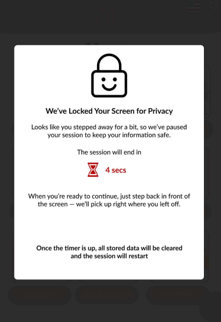
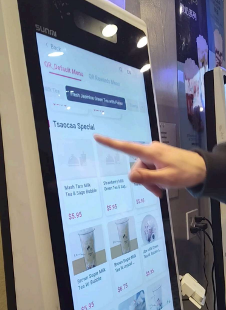

Boba tea has become an increasingly popular drink in the United States over the past few decades. Boba tea shops aim to hook customers with novel drinks and a captivating in-store experience. However, the boba tea shop experience has room for improvement, especially around their ordering experience. For this project, we researched ways to improve the user experience of ordering at a kiosk. Using both primary and secondary research methods, we came to the conclusion that the kiosks could likely be improved by offering more privacy. Our final solution involved combining a privacy screen (similar to those used on phones) with a software-based FaceLock technology that would lock the screen temporarily if the customer moves away.
Our final solution was a hybrid approach between a physical design change (adding a privacy screen) and a software change (adding a timed screen lock when the customer steps away).

Our final mockup of the FaceLock feature in action, made in Figma.

Our team using a kiosk to assess the experience for ourselves.